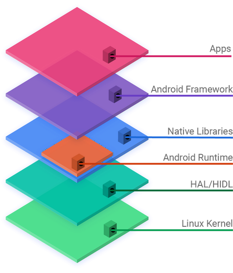

What is Android?
Contents
What is Android?#
Android is a mobile operating system based on a modified version of the Linux kernel and other open-source software
It is designed primarily for touchscreen mobile devices such as smartphones and tablets
The Open Handset Alliance (OHA) is a consortium of 84 firms to develop open standards for mobile devices
OHA Member firms include HTC, Sony, Dell, Intel, Motorola, Qualcomm, Texas Instruments, Google, Samsung Electronics, LG Electronics, T-Mobile, Sprint Corporation (now merged with T-Mobile US), Nvidia, and Wind River Systems
Android Operating System was unveiled in November 2007
The first commercial Android device, the HTC Dream, being launched in September 2008.
Android architecture#

{kind=link}
What is a Kernel?#
The kernel is a computer program at the core of a computer’s operating system and generally has complete control over everything in the system.
It is the portion of the operating system code that is always resident in memory and facilitates interactions between hardware and software components
The kernel is one of the first programs loaded on startup (after the bootloader). It handles the rest of startup as well as memory, peripherals, and input/output (I/O) requests from software, translating them into data-processing instructions for the central processing unit
An oversimplification of how a kernel connects application software to the hardware of a computer

Abbreviations/Definitions#
AOSP - Android Open Source Project - The operating system
FOSS - Free and Open Source Software
HAL/HIDL - HAL interface definition language or HIDL is an interface description language (IDL) to specify the interface between a HAL and its users
HAL - a hardware abstraction layer (HAL) is a layer of programming that allows a computer OS to interact with a hardware device at a general or abstract level rather than at a detailed hardware level. HAL can be called from either the OS’s kernel or from a device driver
Kernel - The core of the Operating system